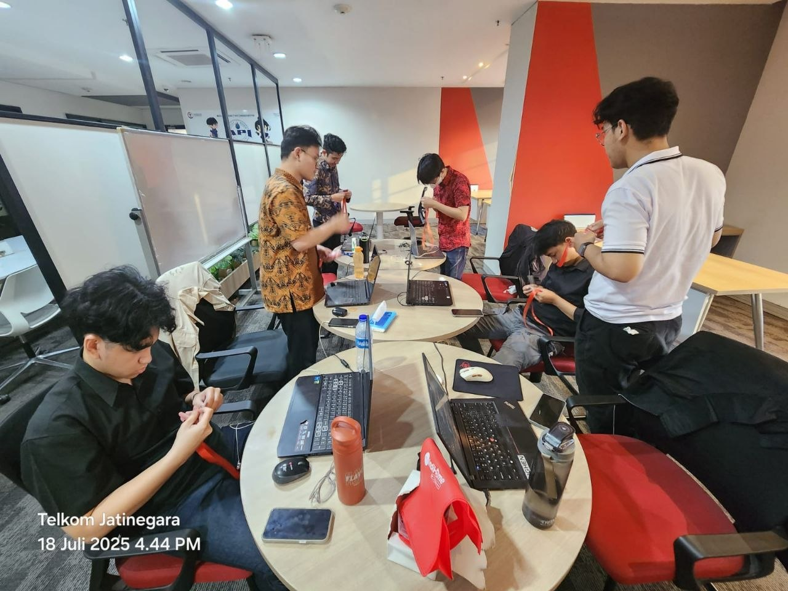
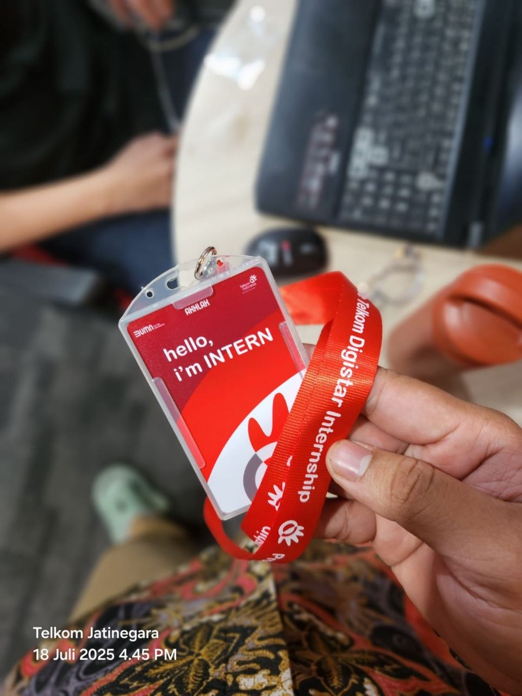
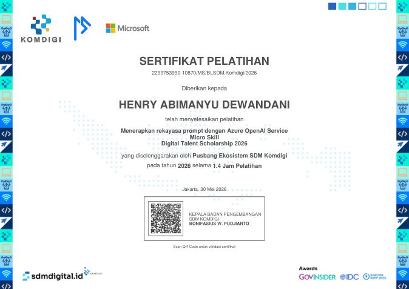
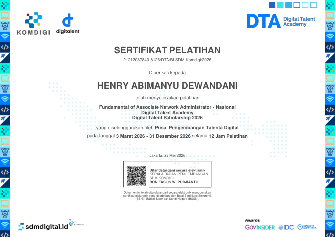
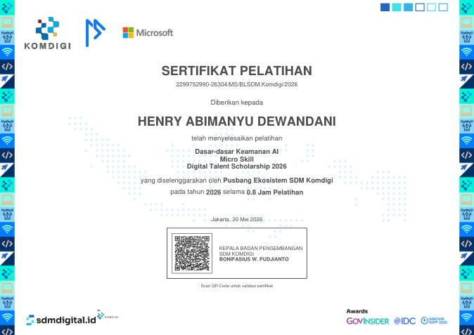
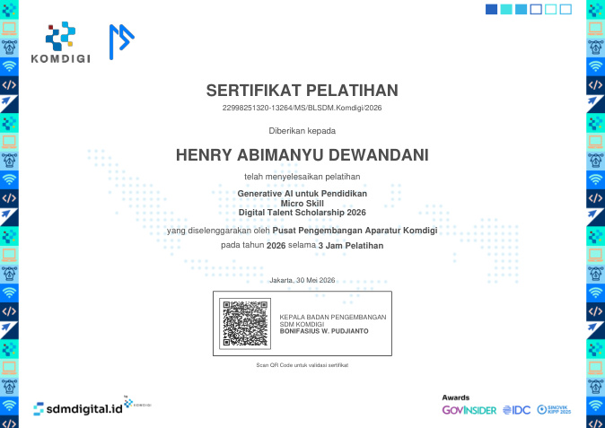
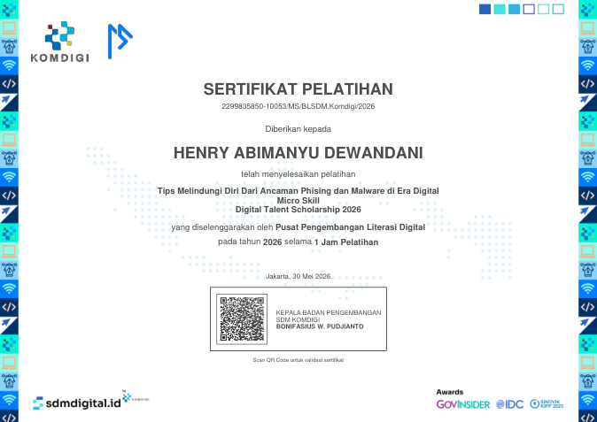

Strukturkan
Mengubah data mentah atau tidak terstruktur menjadi informasi yang siap dianalisis.
Tersedia untuk peluang kerja
Junior Data Analyst · Bekasi, Jawa Barat
Saya Henry Abimanyu Dewandani. Saya mengolah log, mengevaluasi model, dan membangun visualisasi agar informasi yang rumit dapat diperiksa, dibandingkan, dan digunakan untuk mengambil keputusan.
01 / Profil
Kelulusan 2026
Pengalaman saya bergerak dari log operasional hingga data gerakan tubuh. Polanya sama: memahami konteks, merapikan informasi, memilih ukuran yang tepat, lalu menyajikan hasil yang dapat ditelusuri kembali.
Mengubah data mentah atau tidak terstruktur menjadi informasi yang siap dianalisis.
Menggunakan metrik yang relevan, termasuk MAE dan RMSE untuk evaluasi model.
Menyusun dashboard, grafik, dan ringkasan agar temuan mudah diperiksa.
02 / Portofolio
Proyek, sertifikat, dan alat kerja tersusun dalam satu tempat. Pilih studi kasus untuk membaca proses dan batasannya.
Live product
Product analytics
Aplikasi pencatatan latihan yang berkembang menjadi produk analitik untuk membantu pengguna membaca progresnya sendiri—bahkan ketika bekerja secara offline.


13
Model evaluation
Computer vision analysis
Pipeline Python untuk membandingkan MediaPipe BlazePose dan YOLOv8-Pose terhadap pengukuran manual ImageJ pada video bicep curl.
repetisi terdeteksi oleh BlazePose pada skenario terpilih yang dicatat di CV.


12
Prototipe
Data lokasi & produk
Prototipe perencana perjalanan yang menggabungkan katalog destinasi, pencarian tempat, dan penyusunan rute. Tantangannya adalah menjaga asal dan identitas lokasi tetap jelas saat hasil katalog bercampur dengan hasil pencarian.


12
Internal system
Log & observability
Mengolah log ITGC dan Kubernetes menjadi data terstruktur serta dashboard Kibana untuk kebutuhan monitoring operasional dan alur audit.



13
Batas publikasi. Materi, nama host, data, dan tangkapan layar sistem internal tidak ditampilkan karena tidak ada izin publikasi.
Sertifikat
Dokumen Digital Talent Scholarship 2026 dari Komdigi. Sebagian besar adalah Micro Skill singkat; durasi masing-masing dicantumkan agar konteksnya jelas. Pilih kartu untuk membuka PDF asli.

Micro Skill · 1,4 jamMenerapkan Rekayasa Prompt dengan Azure OpenAI ServiceBuka sertifikat ↗ Micro Skill · 1 jamIntroduction To Cloud ComputingBuka sertifikat ↗
Digital Talent Academy · 12 jamFundamental of Associate Network Administrator – NasionalBuka sertifikat ↗
Micro Skill · 0,8 jamDasar-dasar Keamanan AIBuka sertifikat ↗ Micro Skill · 2 jamMembangun Lab Virtual & Dasar LinuxBuka sertifikat ↗ Micro Skill · 2 jamKonsep PemrogramanBuka sertifikat ↗
Micro Skill · 3 jamGenerative AI untuk PendidikanBuka sertifikat ↗ Micro Skill · 1 jamEthical Hacker For DummiesBuka sertifikat ↗
Micro Skill · 1 jamTips Melindungi Diri dari Ancaman Phishing dan MalwareBuka sertifikat ↗ Micro Skill · 1 jamSocial Media Management untuk Brand DigitalBuka sertifikat ↗Keahlian
Alat dan metode yang pernah saya gunakan dalam pengalaman magang, tugas akhir, atau proyek pribadi. Label proyek membantu menunjukkan konteksnya.
01
02
03
04
03 / Jejak
Fondasi teknis Informatika yang dipertemukan dengan praktik monitoring dan analisis data.
Jul–Agu 2025
Pengalaman
Data Analyst Intern, DIT-INE
2022–Sep 2026
Pendidikan
S1 Informatika · IPK 3,21/4,00
Tugas akhir membandingkan MediaPipe BlazePose dan YOLOv8-Pose untuk analisis gerakan bicep curl berbasis video.
2026
Pelatihan
Yayasan Indonesia Emas Merdeka · masih berjalan
Mempelajari dasar kecerdasan buatan dan penerapannya pada layanan AWS. Status program mengikuti CV terbaru.
04 / Kontak
Saya terbuka untuk posisi penuh waktu, kesempatan fresh graduate, dan proyek freelance analitik terpilih.
Mulai percakapan
05 / Komentar
Tinggalkan kesan atau pertanyaan.
Tulis langsung di halaman ini. Nama dan komentar Anda akan terlihat oleh pengunjung lain. Untuk peluang kerja atau proyek, gunakan kontak pribadi di atas.
Komentar
Memuat komentar...